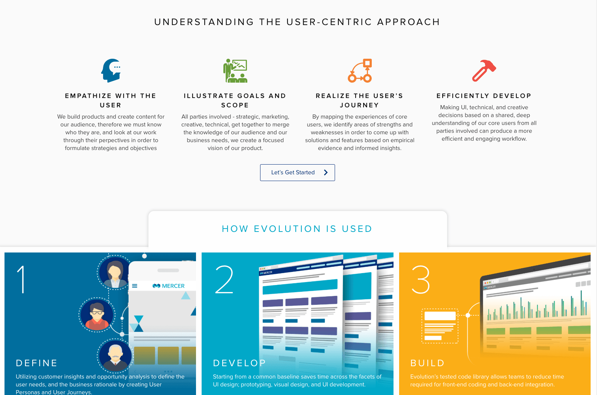
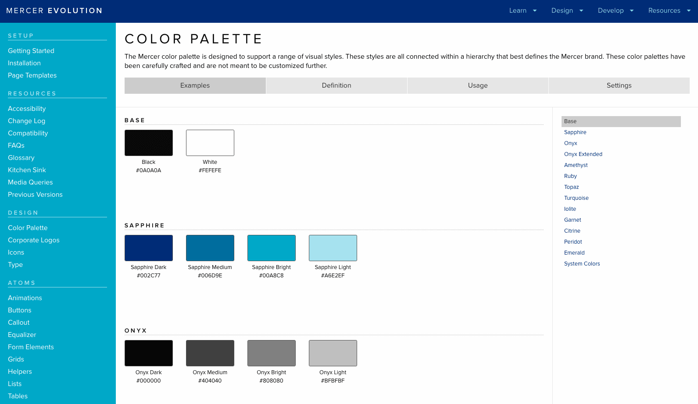
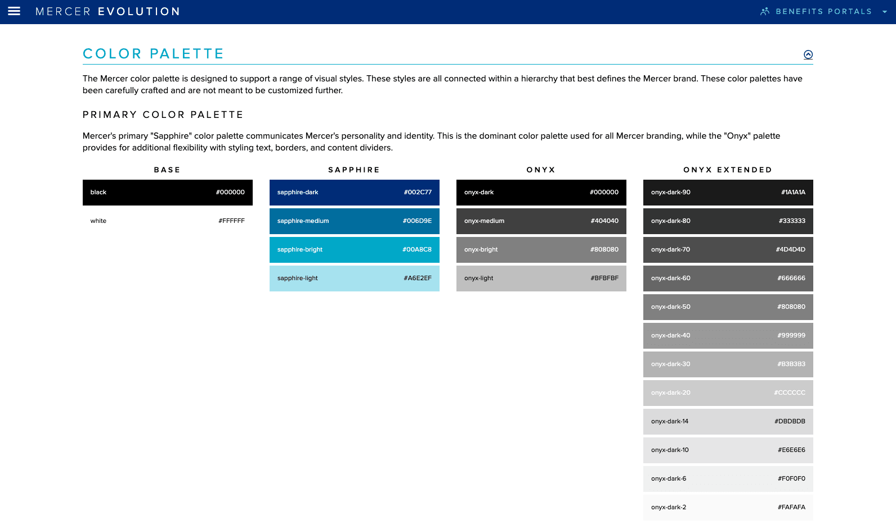
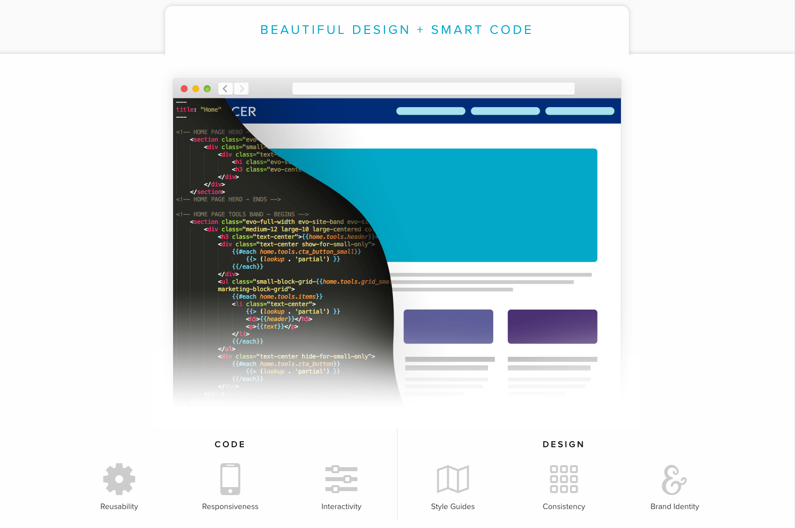
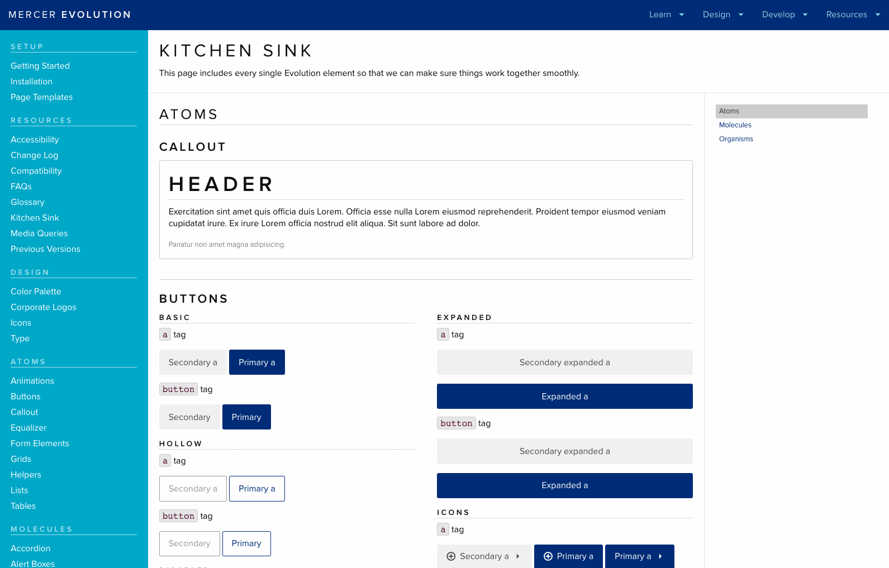
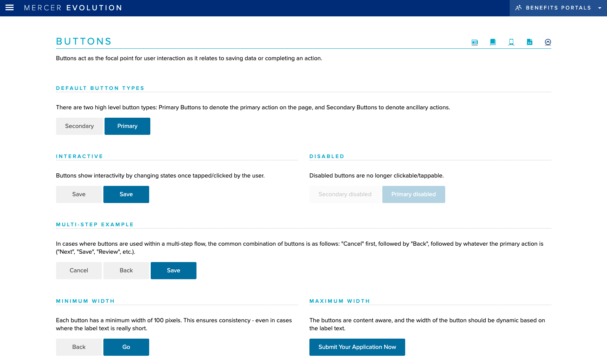

There was no centralized way for back-end teams to consume front-end components, leading to slower handoffs and inconsistent implementation across product lines.
Lead UI Designer & Developer
1 Visual Designer, 3 UX Designers, 2 UI Developers
Over multiple years
Went live with many releases & updates
I built a component library for easier reuse and streamlined code delivery from front-end to back-end, while keeping components easy to update as needs evolved.
Create a design framework that let UI developers implement UX-driven work easily while giving back-end developers clear standards to build against, and expand support systems and tooling for the broader organization over time.






The framework's first version smoothed the front-end-to-back-end handoff and shortened timelines; its second version made ongoing changes far easier for the teams already depending on it.